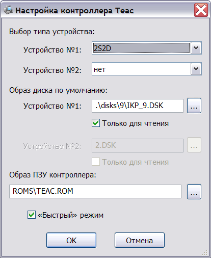
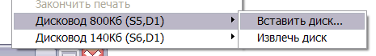

Контроллер поддерживает эмуляцию одного или двух приводов различного типа.
Поддерживаются следующие типы дисководов: 1S1D, 1S2D, 2S1D, 2S2D. Выбор типа дисковода соответствует соединению перемычек на плате контроллера. Большинство стандартного программного обеспечения Агата поддерживают тип дисковода 2S2D, который используется в эмуляторе по умолчанию.
Выбор типа устройства выполняется в окне настройки контроллера Teac:

Также в этом окне можно задать имена файлов с образами дисков, режим "только для чтения", имя файла ПЗУ контроллера (256 байт) и "быстрый" режим обращения к диску, когда на это время отключаются паузы модуля эмуляции процессора.
Модуль контроллера поддерживает 2 формата данных дисков: dsk - посекторный формат и nib - "сырой" формат данных.
При запуске системы модуль контроллера добавляет подменю для каждого имеющегося привода в контекстное меню окна системы:

Используя это подменю, можно сменить текущий образ диска, либо "извлечь" диск из дисковода.
Однако, в отличие от настроек системы, смена диска через контекстное меню не сохраняется для последующего запуска.
См. также: Контроллер дисковода Shugart , Изменение конфигурации, Описание и настройка устройств, Главное меню